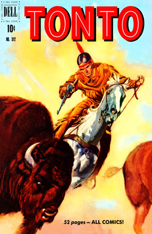

Tonto
 De: La Frikipedia, la enciclopedia extremadamente seria.
De: La Frikipedia, la enciclopedia extremadamente seria.
Un tonto. Si es que se le ve en la cara, coño.
«Mi mamá dice que tonto es el que hace tonterías»
~ Forrest Gump cuando compartió una caja de bombones con un policía mientras hablaba de su vida
«Don Quijote era loco pero no tonto»
~ Miguel de Cervantes hablando de su libro Don Quijote de la mancha para la revista TIMES
«Y me llaman tonto por vender la vaca, porque no tenía dinero para la leche»
~ Abundio cuando vendió la vaca para comprar leche
«Me catalogaron de Tonto»
~ Pichote cavando una mina en medio del mar
«Galileo era tonto por creer que la tierra era redonda»
~ Dios en la parte de abajo de la tierra
«Me tacharon de Tonto»
~ Pichote que metió la picha en un bote.
«Tontos del mundo...¡¡SUS VIÁ CRUJIR VIVOOOSSS!!»
~ El Tio la Vara sobre los tontos
El diccionario de la RAE (Real Academia de la Estupidez) denomina a un tonto como una persona carente de sentido, ilógica y pesada, con poco entendimiento o inteligencia. Sinónimos: Estúpido, Idiota, Gilipollas, Atontao, Carlostorralvo, Menso, Amorfo, Subnormal, Mongolo,Justin Bieber,Perdío, Pringao,Tapias, Alelao y más.
¿A qué se le puede llamar tonto?
Se le puede llamar tonto a la persona que lee esto.
Esta camiseta es la versión gilipollas de la camiseta de Iron Maiden
Se dice de una persona tonta a la cual tu le dices que una cosa es negra (aun siendo totalmente lo contrario) y se cree que es negra, por muy avanzada que sea su edad o sus estudios.
También se puede llamar tonto a cualquier persona que es capaz de estar un año en el colegio, esforzarse mucho y llegar a pensar que aprobará (aun teniendo suspendidas la mayoría de las asignaturas las evaluaciones anteriores) llegar el final y, sí suspender. Buscar una razón de ser.
Tonto se le puede llamar a cualquier panoli que veas por la calle con cara de subnormal (no que sea subnormal) a ese se le puede llamar tonto con todas sus letras.
También se le puede llamar tonto a todo ese que sin hacer nada le salen bien las cosas (entonces se dice "tiene suerte el tonto ese")
Tambien al paleto del pueblo que vendio su coche porque no tenia para gasolina.
Tonto también puede ser ese que repite todo lo que dices o hace lo mismo que tú para tratar de no ser tonto convirtiéndose así en más tonto todavía por que ya lo dicen: Aunque el tonto se vista de seda tonto se queda.
¿Cómo saber si soy tonto?

Los tontos se caracterizan por dar vueltas como gilipollas
Es muy fácil saber si eres tonto, solamente has de hacerte estas preguntas.
- ¿Voy de guapo siendo feo?
- ¿Repito lo mismo que otros como un loro?
- ¿Me echan del curro y aún no se por que?
- ¿Curro en un sitio donde no cobro y a más todos los días?
- ¿Me mato a estudiar 1 semana y suspendo?
- ¿Si me frotan el pelo se pone a nevar?
- ¿Llevo camisetas tipo a esta?
- ¿Llamo a tus superiores cada 30 segundos para saber como se hace una cosa?
- ¿Apruebo los trabajos por que me los hacen entre el profe y un compañero?
- ¿Llevo una camisa en la que salen ojos enfurecidos?
- ¿Voy de chulo pero en realidad soy un mierdas... y no lo sé?
- Cuando suelto un chiste en clase y la gente se ríe ¿pienso que se ríen del chiste pero en realidad se ríen de mi?
- ¿Digo todas las palabras en un sufijo? Por ejemplo -amen (pulsamen, ostiamen...), -eisons (holeisons, barreisons)
- ¿La gente me llama tonto aunque soy listo?
- ¿Me rio por cualquier chorrada?
- ¿Me ha vareado alguna vez el Tio la Vara?
- ¿Me gusta el El Canto del Tonto?
- ¿por mas que vayas a recuperacion, suspendes?
- ¿No sabes como sumar?
- ¿Crees que vas a perder facultades solo por dejar de dibujar 2 semanas?
- ¿Tienes complejo de insecto?
- ¿Escucho reagetontoo
pooppop?
Soluciones
Si has respondido sí al menos a 2 o más preguntas (la de si te llamas IP anónima vale por 20) tengo que darte una noticia: ERES TONTO. Vamos a entrar en un análisis más profundo: si has respondido sí a todas o casi todas puedes empezar a pensar que eres más tonto que Pichote.
Si se te ha olvidado cuántas son sí y cuántas no, te voy a dar una ayudita: tienes menos luces que un episodio de Expediente X, ¡coño ya!
Y, si has contestado sí a lo de si te llamas IP anónima entonces ya...siento decirte que eres mas tonto que Bill Gates los canis, si, si, peor que un cani... eso es caer bajo IP anónima pero que MUY BAJO
 Ser tonto no es tan malo, hasta puedes tener tu propio cómic.
¿Cómo evitar caer en la tentación de ser tonto?
- Muy fácil (según se mire): sé un friki recatado y haz que te respeten, o mejor no seas friki, que tambien te tomaran por tonto, yo que tu solo hago que me respeten.
- No juegues con coches si tienes mas de 18,ni con pokemon, ni digas tonterias, que son propias de un tonto.
- No te relaciones con tontos, asi evitarás serlo...
- Intenta por todos los medios, dejar mal a tu profe.
- Si hay dos tontos en la clase y tu eres uno, intenta maltratar al otro, asi veran tu superioridad.
- Intenta no juntarte mucho con IP anónima
- Cuando te llamen tonto, responde: "Con tu madre me lo monto".
- Hay infinidad de cosas que puedes hacer en cambio si haces las propias de un tonto, seras tonto. Mas facil:
Si no haces nada de eso serás denominado como TONTO.
¿Cómo evitar arrearle a un tonto por su condición?
Es difícil ya que los tontos se hacen los mismos para que la gente normal les coja mania y les den ganas de Arrearles de hostias y meterles una paliza y dejarlos mas tontos de lo que están ayudarles a salir del mundo de la tontina que no te puedes resistir.
¿Qué pasa si le arreas a un tonto?
No pasa nada, como es tonto no se entera! Y ademas, no ves que les gusta? Se rien.Hazles felices, reparteles felicidad!
Si estas leyendo esto es porque tu tambien eres un tonto y quieres evitar que te arreen
El mundo está lleno de tontos
Si es cierto que el mundo está lleno de tontos, todos los dias estás rodeado de tontos. Incluso ahora estás rodeado, en tu portal, en la calle o en tu casa.
Preguntas para hacerle a un tonto

Pelea de tontos
- ¿Tú eres tonto o eres tonto?
- ¿Tú eres tonto o muerdes impresoras?
- ¿Tú eres tonto o afilas ranas?
- ¿Tú eres tonto o disparas pistolas?
- ¿Tú eres tonto o frenas móviles?
- ¿Tú eres tonto o haces una carrera contra tu sombra y quedas segundo teniendo el sol de frente?
- ¿Tú eres tonto o comes agua?
- ¿Tú eres tonto o bebes comida?
- ¿Tú eres tonto o has buscado tonto en la frikipedia?
- ¿Tú eres tonto o subes cuando bajas?
- ¿Tú eres tonto o pinchas tinta?
- ¿Tú eres tonto y en tu casa lo celebran?
- ¿Tú eres tonto y en tu casa no lo saben pero tu perro lo sospecha?
- ¿Tú eres tonto o afeitas bombillas?
- ¿Tú eres tonto o pinchas ruedas de tren?
- ¿Tú eres tonto o te llevas la calculadora al exámen de historia?
- ¿Tú eres tonto o escuchas el MP3 en la discoteca?
- ¿Tú eres tonto o haces puenting desde una farola?
- ¿Tú eres tonto o peinas calvos?
- ¿Tú eres tonto o persiges coches aparcados?
- ¿Tú eres tonto o fumas galletas porque pone MARIA?
- ¿Tú eres tonto o vas en taxi a las paradas de autobús?
- ¿Tú eres tonto o meas boca arriba?
- ¿Tú eres tonto o comes cagando?
- ¿Tú eres tonto o barres el desierto?
- ¿Tú eres tonto o muerdes polvo?
- ¿Tú eres tonto o fumas chicle?
- ¿Tú eres tonto o pellizcas cristales?
- ¿Tú eres tonto o mascas chapas?
- ¿Tú eres tonto o pegas a los ladrillos?
- ¿Tú eres tonto o matas a los muertos?
- ¿Tú eres tonto o fumas bolis?
- ¿Tú eres tonto o te bañas en clavos?
- ¿Tú eres tonto o en tu casa no hay botijo?
- ¿Tú eres tonto o afeitas erizos?
- ¿Tú eres tonto o pescas en el vater?
- ¿Tú eres tonto o afeitas peluches?
- ¿Tú eres tonto o traficas lacasitos de colores?
- ¿Tú eres tonto o plantas galletas?
- ¿Tú eres tonto o cultivas magdalenas?
- ¿Tú eres tonto o esnifas petazeta?
- ¿Tú eres tonto o tiras piedras a los aviones?
- ¿Tú eres tonto o quemas hielo?
- ¿Tú eres tonto o inventaste el submarino descapotable?
- ¿Tú eres tonto o comes pizza en un chino?
- ¿Tú eres tonto o vendiste tu tele para comprarte el mando?
- ¿Tú eres tonto o vendiste tu piscina para comprar agua?
- ¿Tú eres tonto o vendiste dinero por aire?
- ¿Tú eres tonto o cuidas piedras?
- ¿Tú eres tonto o saltas abajo?
- ¿Tú eres tonto o cagas de pie?
- ¿Tú eres tonto o vendes el coche para comprar la gasolina?
- ¿Tú eres tonto o vendes la casa para pagar la hipoteca?
- ¿Tú eres tonto o escribes con el borrador?
- ¿Tú eres tonto o borras con el lápiz?
- ¿Tú eres tonto o conduces sin volante?
- ¿Tú eres tonto o estás respondiendo a esto?
- ¿Tú eres tonto o eres cani?
- ¿Tú eres tonto o te duchas con paraguas?
- ¿Tú eres tonto o cortas mangas de los chalecos?
- ¿Tú eres tonto o saltas muros de cristal para ver que hay detras?
- ¿Tú eres tonto o bailas la canción del telediario?
- ¿Tú eres tonto o tienes menos luces que una patera?
- ¿Tú eres tonto o fumas agua?
- ¿Tú eres tonto o esnifas piedras?
- ¿Tú eres tonto o comes mierda de gato?
- ¿Tú eres tonto o escupes a los aviones?
- ¿Tú eres tonto o te atropellan los coches aparcados?
- ¿Tú eres tonto o estás leyendo esto ahora mismo?
- ¿Tú eres tonto o vendes la vaca para comprar leche?
- ¿Tú eres tonto o vendes las gallinas para comprar huevos?
Nivel de tonto
El refrán popular inglés ya lo dice. "Evita discutir con un tonto: primero te hará bajar a su nivel, y luego te golpeará con su experiencia." Efectivamente, intentar batir a un tonto en su terreno es misión imposible; e intentar traerlo a una discusión de nivel normal es imposible. Tienes todas las de perder.
Vigila, los tontos son una especie muy complicada de tratar y peligrosa.
Tambien, segun la Organizacion Mundial de la Salud (OMS), las cifras de personas infectadas con esta enfermedad ascienden a 360.000.000 millones de personas.Si usted sospecha de que es tonto acuda INMEDIATAMENTE a urgencias.
Los niveles de tontos se clasifican en 4:
- Tonto con remedio: Aquellas personas que pueden curarse la enfermedad.
- Tonto casi sin remedio: Aquellas personas que pueden curarse pero lo tienen difícil.
- Tonto sin remedio: Aquellas personas que no pueden curar la enfermedad por mucho que lo intenten, vamos, como tu, IP anónima
- TONTO CON AVARICIA:claro ejemplo el del bisabuelo de IP anónima.
Ver también
Autor(es):
- Krusher
- Nexo
- Fordus
- Badbull
- Frikiman
- Aque
- Epikurolibre
- Presioe
- Archivaldo
- ElInventor
Frikipedia 2005-2016, Licencia
GFDL 1.2 - Extraído por FrikiLeaks